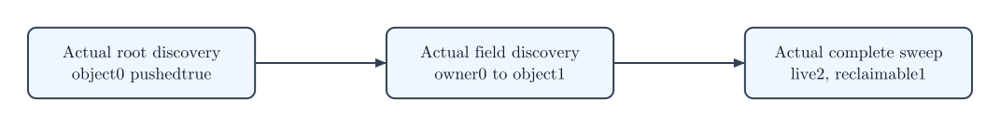
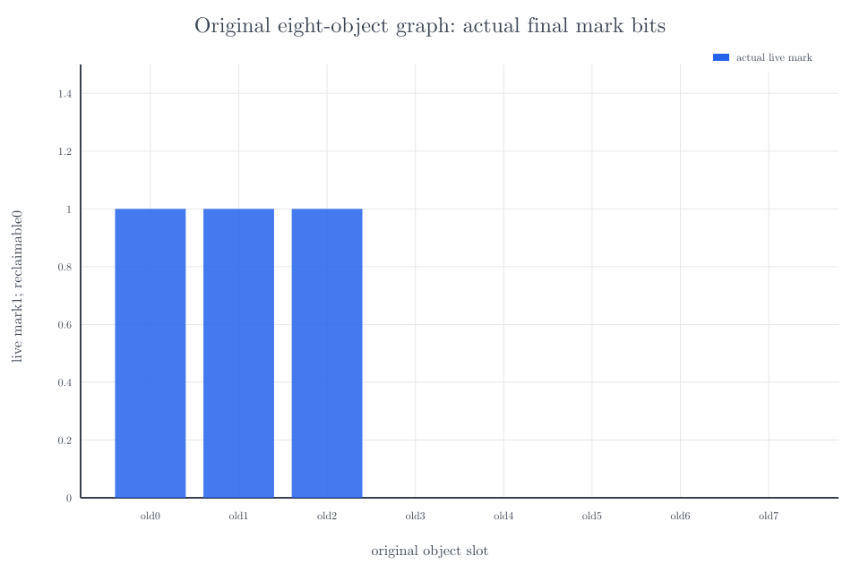
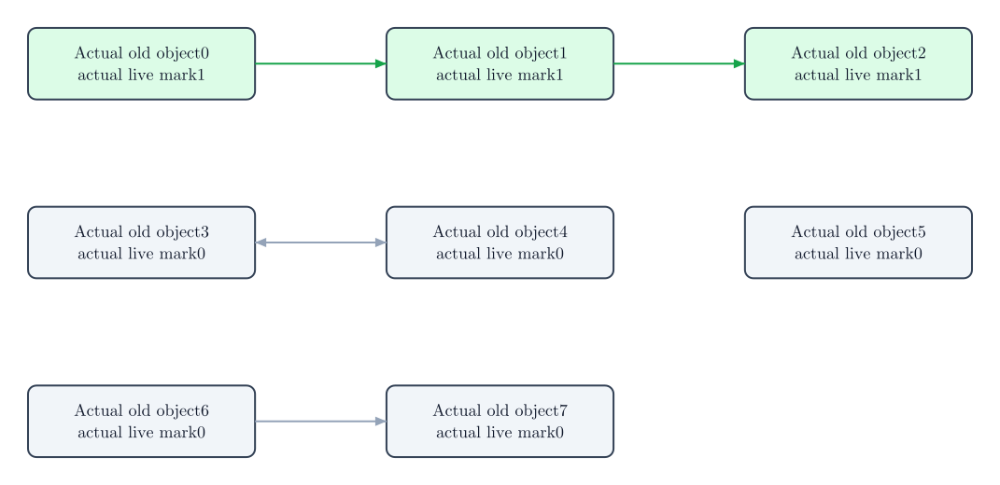
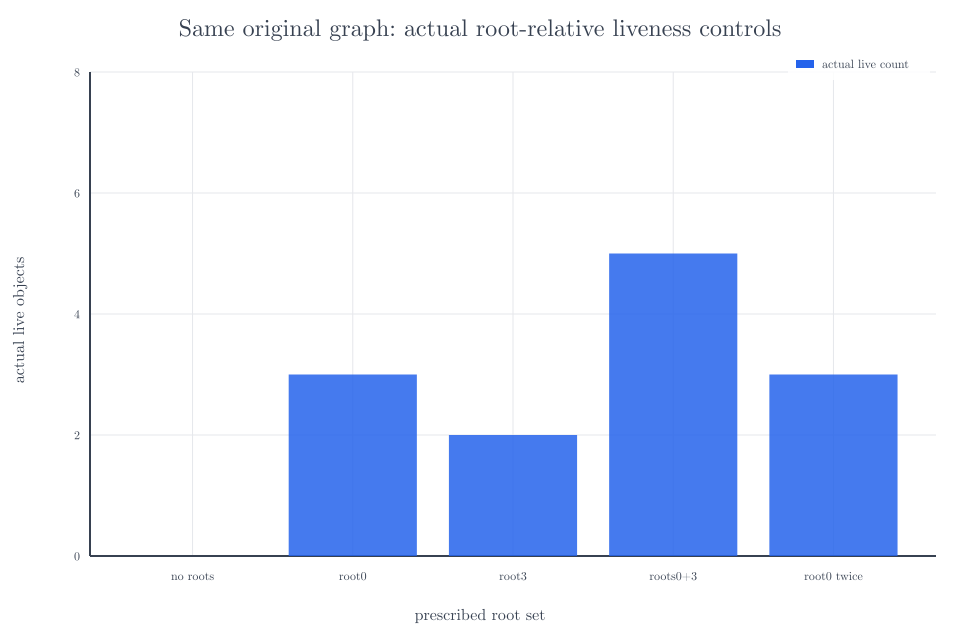

Mark-and-sweep object-graph liveness
Abstract
Mark-and-sweep separates root-reachable objects from unreachable ones, including unreachable cycles. We retain the original eight-object graph, expose actual canonical root/pop/reference events and every real sweep decision, and distinguish reclaimable object identities from a physical C++ deallocation or allocator implementation.
Tiny root discovery and sweep
Marking starts with every supplied root. Mark an object at the moment it is pushed, so duplicate roots, duplicate fields and cycles cannot push it twice. Pop pending objects LIFO and examine their original ordered fields, marking/pushing each newly discovered target. After the stack empties, scan every original object slot and append its id to either the live or reclaimable result according to its actual mark.
For three objects with root0 and field0-to1, objects0 and1 are live and object2 is unreachable. The table records the actual stack/mark events, while the diagram selects the real root discovery, real child discovery and returned partition. The liveness trace is emitted inside the same canonical producer used by both collector models and reachable_from_roots; no second traversal manufactures an explanation.
#include <dm/dm.hpp>
int main() {
std::filesystem::create_directories("build");
auto t = dm::algorithms::mark_sweep_trace({3, {{1}, {}, {}}, {0}, {}});
std::print("| actual event0:root,1:pop,2:field | actual object | actual owner or minus1 | actual " "original slot or SIZE_MAX | previously marked | actually pushed | actual stack before | " "actual stack after |\n| ---: | ---: | ---: | ---: | --- | --- | ---: | ---: |\n");
for (auto &e : t.marking.events)
std::print("| {} | {} | {} | {} | {} | {} | {} | {} |\n", int(e.kind),
e.object, e.parent, e.slot, e.already_marked, e.pushed,
e.stack_before, e.stack_after);
auto it =
std::find_if(t.marking.events.begin(), t.marking.events.end(), [](auto &e) {
return e.kind == dm::algorithms::ObjectMarkEventKind::Reference &&
e.pushed;
});
dm::graphics::Diagram d;
d.node("root", {0, 0},
std::format("Actual root discovery\nobject{} pushed{}",
t.marking.events.front().object,
t.marking.events.front().pushed)).node(
"child", {6, 0},
std::format("Actual field discovery\nowner{} to object{}", it->parent,
it->object)).node("sweep", {12, 0},
std::format("Actual complete sweep\nlive{}, reclaimable{}",
t.analysis.result.live.size(),
t.analysis.result.freed.size())).edge("root", "child").edge("child", "sweep");
d.save_svg("build/mark_sweep_tiny.svg");
}| actual event0:root,1:pop,2:field | actual object | actual owner or minus1 | actual original slot or SIZE_MAX | previously marked | actually pushed | actual stack before | actual stack after |
|---|---|---|---|---|---|---|---|
| 0 | 0 | -1 | 0 | false | true | 0 | 1 |
| 1 | 0 | -1 | 18446744073709551615 | true | false | 1 | 0 |
| 2 | 1 | 0 | 0 | false | true | 0 | 1 |
| 1 | 1 | -1 | 18446744073709551615 | true | false | 1 | 0 |

Original eight-object heap model
Retain original refs[[1],[2],[],[4],[3],[],[7],[]] with root[0]. The actual live ids are[0,1,2], and the actual reclaimable ids are[3,4,5,6,7]. The result vectors preserve increasing original slot order and no survivor is relocated. The table below records each actual sweep classification and its before/after append counts, rather than inferring a sweep sequence from the final partition.
The native plot shows actual final mark bits at their original slots. The zero-height bars mean reclaimable in this graph model, not a measured allocation/free-list fragment size. Size metadata is ignored because the collector operates on object identities and unit slots.
#include <dm/dm.hpp>
int main() {
std::filesystem::create_directories("build");
auto t =
dm::algorithms::mark_sweep_trace(dm::algorithms::mark_sweep_demo_graph());
std::print("| actual original slot | actual live mark | live count before | reclaimable count before | " "live count after | reclaimable count after |\n| ---: | --- | ---: | ---: | ---: | ---: |\n");
std::vector<double> height;
std::vector<std::string> labels;
for (auto &s : t.sweep) {
std::print("| {} | {} | {} | {} | {} | {} |\n", s.object, s.live,
s.live_before, s.freed_before, s.live_after, s.freed_after);
height.push_back(s.live);
labels.push_back(std::format("old{}", s.object));
}
std::print("\nActual live count {}; actual reclaimable count {}; actual full sweep slots {}.\n",
t.analysis.result.live.size(), t.analysis.result.freed.size(),
t.analysis.work.scanned);
auto p =
dm::graphics::RPlot::barplot(height, labels, "actual live mark",
{37, 99, 235});
p.x_label("original object slot").y_label("live mark1; reclaimable0");
p.y_limits(0, 1.5).title("Original eight-object graph: actual final mark bits").save_svg("build/mark_sweep_original.svg");
}| actual original slot | actual live mark | live count before | reclaimable count before | live count after | reclaimable count after |
|---|---|---|---|---|---|
| 0 | true | 0 | 0 | 1 | 0 |
| 1 | true | 1 | 0 | 2 | 0 |
| 2 | true | 2 | 0 | 3 | 0 |
| 3 | false | 3 | 0 | 3 | 1 |
| 4 | false | 3 | 1 | 3 | 2 |
| 5 | false | 3 | 2 | 3 | 3 |
| 6 | false | 3 | 3 | 3 | 4 |
| 7 | false | 3 | 4 | 3 | 5 |
Actual live count 3; actual reclaimable count 5; actual full sweep slots 8.

Why an unreachable cycle remains garbage
Every marked root has a path of length zero from the roots, and every marked field target extends such a path by one edge, proving soundness. Conversely, induction on root-path length shows every reachable target is eventually pushed and processed; finite mark-on-push prevents an infinite cycle. Thus the final marks are exactly the least root-reachable closure. Scanning every old slot then partitions all ids into disjoint live and reclaimable sets.
The original3-to4-to3 cycle has incoming references from its own members but no path from root0. Both therefore remain unmarked and reclaimable. Basic reference counting alone would retain such a cycle unless augmented with cycle handling. If root3 is supplied instead, the exact same cycle becomes live: garbage is relative to the chosen roots, not an intrinsic property of a component.
The native diagram shows original graph edges and actual final node marks. Grey unreachable edges are part of the owned input graph and complete validation, but were never traversed during live marking. The actual marker visits only two live-owner fields, while complete validation checks all five original fields, including garbage.
#include <dm/dm.hpp>
int main() {
std::filesystem::create_directories("build");
auto t =
dm::algorithms::mark_sweep_trace(dm::algorithms::mark_sweep_demo_graph());
auto &g = t.marking.graph;
auto &r = t.analysis.result;
std::array<dm::graphics::DiagramPoint, 8> positions{{{0, 0}, {6, 0},
{12, 0}, {0, -3},
{6, -3}, {12, -3},
{0, -6}, {6, -6}}};
dm::graphics::Diagram d;
for (int i = 0; i < g.num_objects; ++i) {
dm::graphics::DiagramNodeStyle style;
style.fill =
r.marked[i] ? dm::graphics::RGB{220, 252, 231}
: dm::graphics::RGB{241, 245, 249};
d.node(std::to_string(i), positions[i],
std::format("Actual old object{}\nactual live mark{}", i,
int(r.marked[i])), style);
}
std::print("| original owner | original target | actual owner live | field visited in live marking |\n| " "---: | ---: | --- | --- |\n");
for (int i = 0; i < g.num_objects; ++i)
for (int child : g.refs[i]) {
dm::graphics::DiagramStroke stroke;
stroke.color =
r.marked[i] ? dm::graphics::RGB{22, 163, 74}
: dm::graphics::RGB{148, 163, 184};
d.edge(std::to_string(i), std::to_string(child), {}, stroke);
std::print("| {} | {} | {} | {} |\n", i, child, bool(r.marked[i]),
bool(r.marked[i]));
}
std::print("\nActual complete validated fields {}; actual live-marking field visits {}.\n",
t.analysis.work.marking.validation.references,
t.analysis.work.marking.references);
d.save_svg("build/mark_sweep_cycles.svg");
}| original owner | original target | actual owner live | field visited in live marking |
|---|---|---|---|
| 0 | 1 | true | true |
| 1 | 2 | true | true |
| 3 | 4 | false | false |
| 4 | 3 | false | false |
| 6 | 7 | false | false |
Actual complete validated fields 5; actual live-marking field visits 2.

Root controls, actual costs and model boundaries
Complete structural validation checks the nonnegative dense object count, exactly one reference row per object and every root/field id, including unreachable fields. These guards occur before capture or indexing. Duplicate roots/fields, sharing, self references and cycles are valid. Supplied size metadata is ignored entirely by this slot-only model. The graph and its arrays are borrowed unchanged for ordinary analysis; traces own a complete original copy including ignored metadata.
Total validation/mark/sweep time is O(N+E+R), since all original fields must be validated even when only a small live component is traversed. Dense marks, pending stack and returned live/reclaimable ids require O(N) storage in addition to input. The implementation models graph liveness and classification; it does not destroy C++ objects, free allocator blocks, rebuild a free list, compact payloads or implement incremental/concurrent collection. Stop-the-world collector mechanisms are motivation rather than a claim about a running managed heap.
The root controls below are independent collector runs on the identical original graph, not prefix reruns for reconstructing history. They retain empty roots, root0, root3, both components, and a duplicated root0. The actual full sweep remains eight slots in every run, while actual live traversal changes with reachability and duplicate roots do not duplicate discoveries.
Trace admission counts shared marking’s2*N+E+R+S base original/mark slots and actual root/pop/live-field events, then one record per actual old-slot sweep classification. Default cap is one million; zero disables the optional cap. Fields, row headers, capacities, returned/runtime mark/result copies and physical bytes are excluded. Captures contain one actual marking execution and one actual sweep, complete or exception. A valid empty graph produces empty vectors. No external dataset is relevant to these exact object-graph controls.
#include <dm/dm.hpp>
int main() {
std::filesystem::create_directories("build");
std::vector<double> live;
std::vector<std::string> labels{"no roots", "root0", "root3", "roots0+3",
"root0 twice"};
std::vector<std::vector<int>> roots{{}, {0}, {3}, {0, 3}, {0, 0}};
std::print("| prescribed root control | actual root slots examined | actual discovered live objects | " "actual live-owner fields visited | actual complete validated fields | actual sweep slots | " "actual reclaimable ids |\n| --- | ---: | ---: | ---: | ---: | ---: | ---: |\n");
for (std::size_t i = 0; i < roots.size(); ++i) {
auto g = dm::algorithms::mark_sweep_demo_graph();
g.roots = roots[i];
auto a = dm::algorithms::mark_sweep_analyze(g);
auto &w = a.work;
std::print("| {} | {} | {} | {} | {} | {} | {} |\n", labels[i],
w.marking.roots, w.marking.marks, w.marking.references,
w.marking.validation.references, w.scanned,
a.result.freed.size());
live.push_back(a.result.live.size());
}
auto p =
dm::graphics::RPlot::barplot(live, labels, "actual live count",
{37, 99, 235});
p.x_label("prescribed root set").y_label("actual live objects");
p.y_limits(0, 8).title("Same original graph: actual root-relative liveness controls").save_svg("build/mark_sweep_roots.svg");
}| prescribed root control | actual root slots examined | actual discovered live objects | actual live-owner fields visited | actual complete validated fields | actual sweep slots | actual reclaimable ids |
|---|---|---|---|---|---|---|
| no roots | 0 | 0 | 0 | 5 | 8 | 8 |
| root0 | 1 | 3 | 2 | 5 | 8 | 5 |
| root3 | 1 | 2 | 2 | 5 | 8 | 6 |
| roots0+3 | 2 | 5 | 4 | 5 | 8 | 3 |
| root0 twice | 2 | 3 | 2 | 5 | 8 | 5 |

Verification and references
Native tests exhaust all4096 three-vertex directed-graph/root-set combinations
against independent transitive closure, verify every real sweep read and
before/after partition count, and retain the original unreachable cycle/chain
and changed-root controls. Shared liveness tests inspect actual
mark/stack/root/field order, duplicate/self/cyclic references, complete invalid
unreachable fields, exact quotas, ignored sizes, ownership and a100000-object
iterative chain. Existing memory/format regression cases remain. The ten-report
batch passes 95 CTest cases, 30 directly instrumented ASan/UBSan cases, 121
compiled and executed public examples, 601/601 scoped documentation definitions
and 11 representative hovers. Independent integer, Fraction, graph, string and
NumPy references verify 82,729 records, including the complete original seeded
LSH study. Frozen comparisons preserve ordinary legacy results; malformed-input,
sentinel-collision, ownership and explicit-budget corrections are documented
above. Thirteen checkout headers and thirteen installed headers compile
independently, and an installed-header native consumer links and runs. Each
complete report program runs against the checkout library; all four native
figures are reviewed and HTML/Markdown exports preserve computed results and
image bytes. Batch receipts: build/mepml-conversion/batch-214-223/.
J. McCarthy(1960), Recursive Functions of Symbolic Expressions and Their Computation by Machine, Part I, Communications of the ACM3(4),184–195, describes early LISP list processing and reclamation. The report’s concrete complete-validation, mark-on-push ordering and returned object-id vectors are explicit contracts of this native graph model.